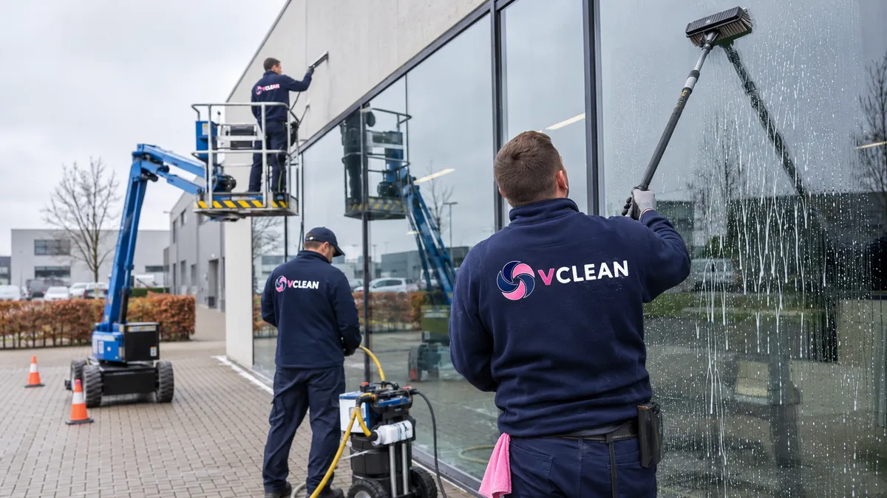
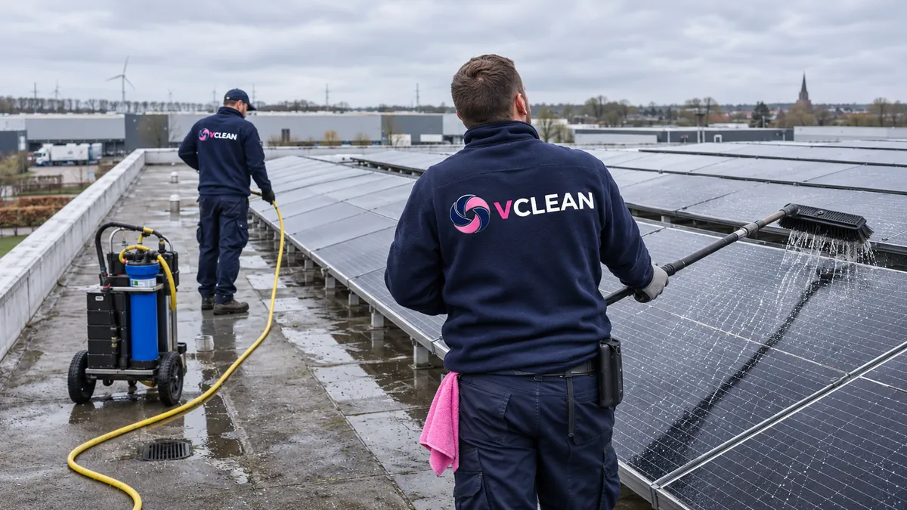
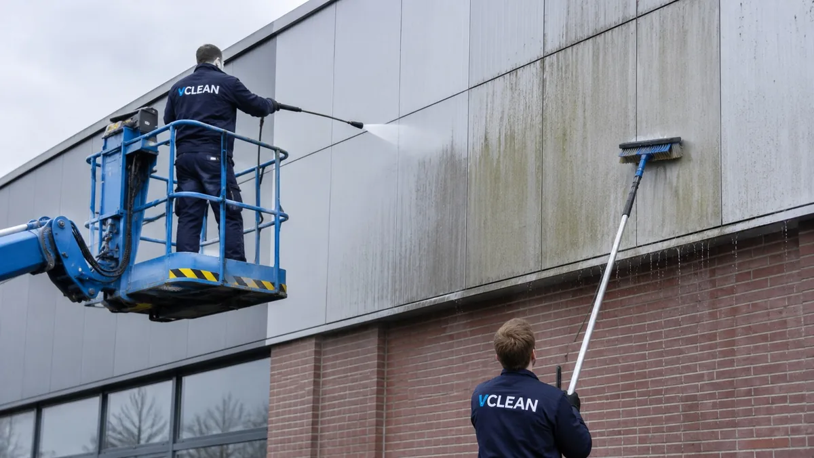
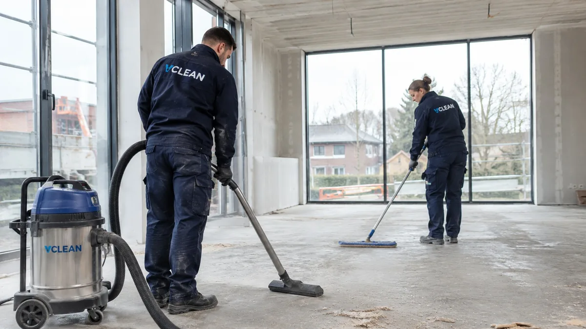
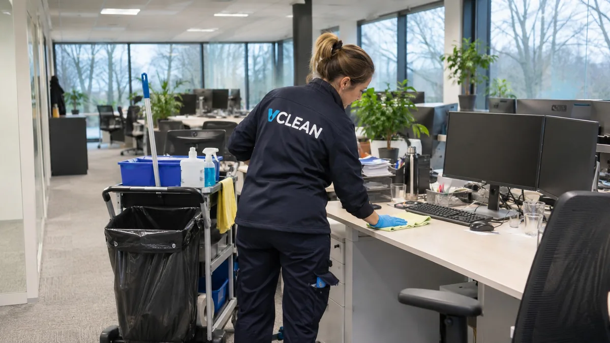
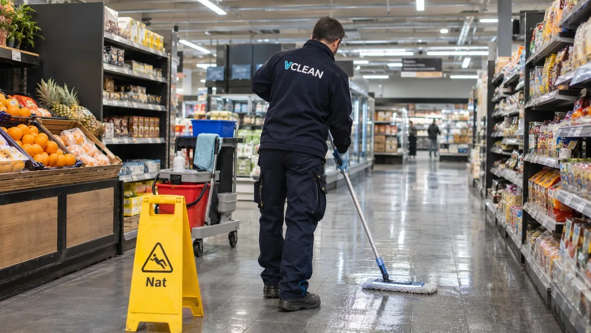
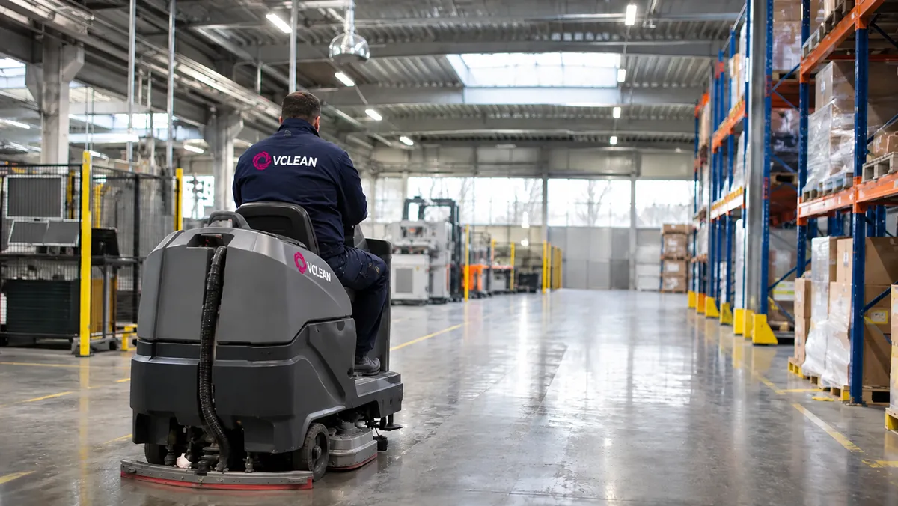

Diensten
Schoonmaak afgestemd op jouw werkplek.
Van ramen en gevels tot het dagelijks onderhoud van je kantoor of een grote kuis van je bedrijfshal. Filter op wat je zoekt.
Diensten
Kies wat je nodig hebt

Ramen en glas
Ramen, glazen wanden en lichtstraten, binnen en buiten.
Bekijk dienst →
Zonnepanelen reinigen
Panelen op bedrijfsdaken reinigen zonder agressieve middelen.
Bekijk dienst →
Gevel-, dak- en buitenreiniging
Gevels, PVC, daken, laadkades en verharding, met lage of hoge druk naargelang de ondergrond.
Bekijk dienst →
Bouw- en opleveringsschoonmaak
Bouwstof en resten weg na nieuwbouw of renovatie, zodat het gebouw klaar is voor gebruik.
Bekijk dienst →
Eindschoonmaak bij verhuis
Een leeg pand grondig schoon na een verhuis, ontruiming of het einde van een huur.
Bekijk dienst →
Kantoorschoonmaak
Bureaus, vergaderzalen, keuken en sanitair. Overdag of na de kantooruren.
Bekijk dienst →
Winkelschoonmaak
Winkelvloer, inkom, paskamers en etalage, ingepland rond je openingsuren.
Bekijk dienst →
Industriële schoonmaak
Magazijnen, bedrijfshallen en logistieke sites, afgestemd op je bedrijfsplanning.
Bekijk dienst →
Industriële vloerreiniging
Schrobzuigen van betonvloeren, coatings en loopzones, met de juiste machine per vloer.
Bekijk dienst →
Productie- en machinereiniging
Lijnen, machines en productieruimtes, volgens je reinigings- en hygiëneplan.
Bekijk dienst →
Dieptereiniging en grote kuis
Eenmalige of periodieke grondige reiniging, bijvoorbeeld tijdens een stilstand.
Bekijk dienst →Vertel ons over je locatie.
We bekijken wat er moet gebeuren en bezorgen je een voorstel op maat.